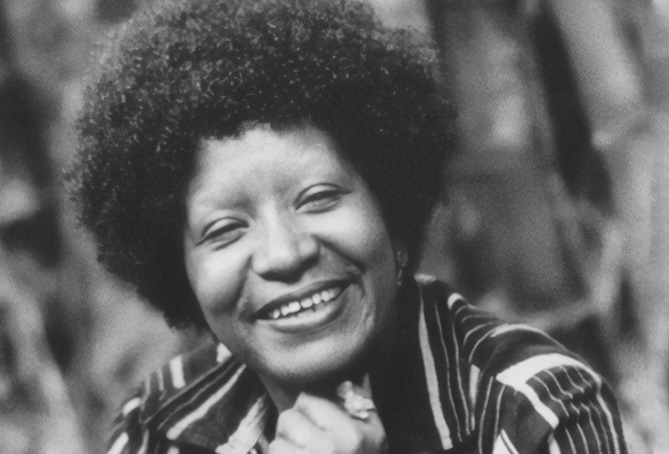
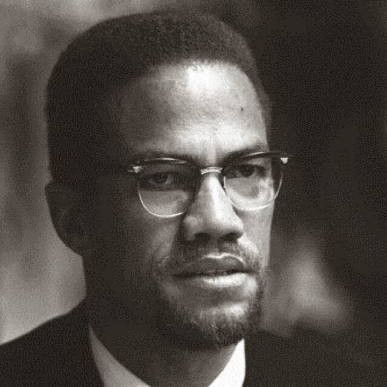
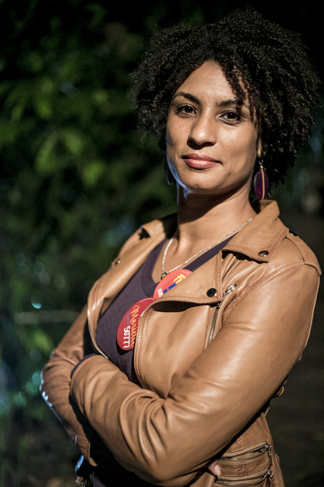
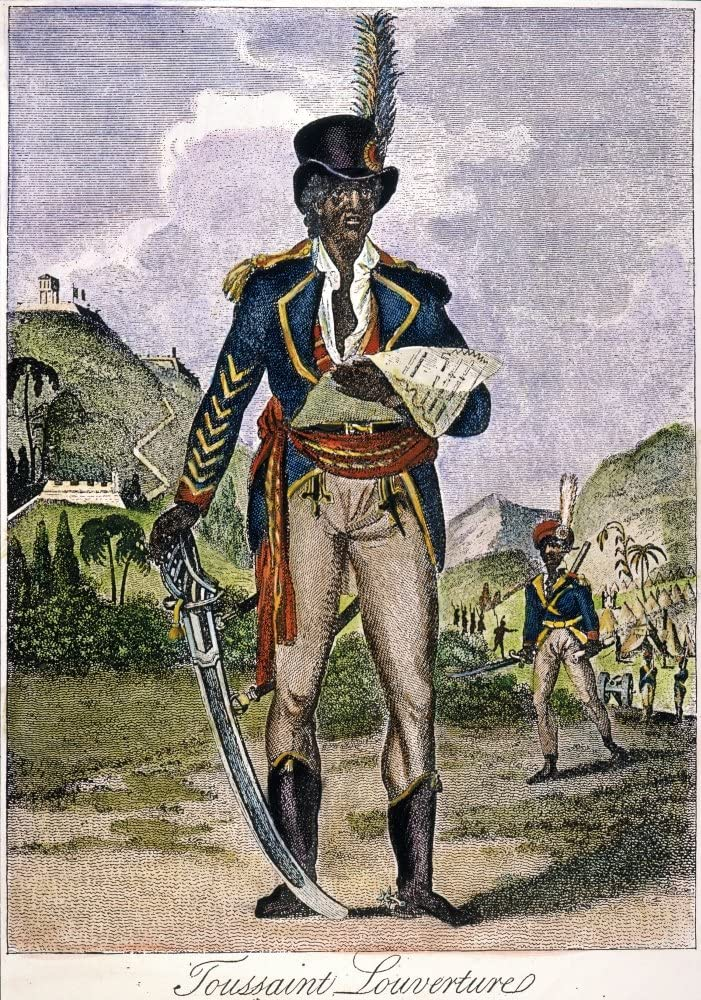
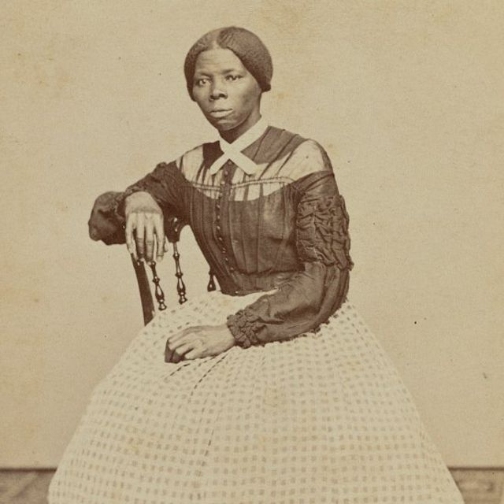
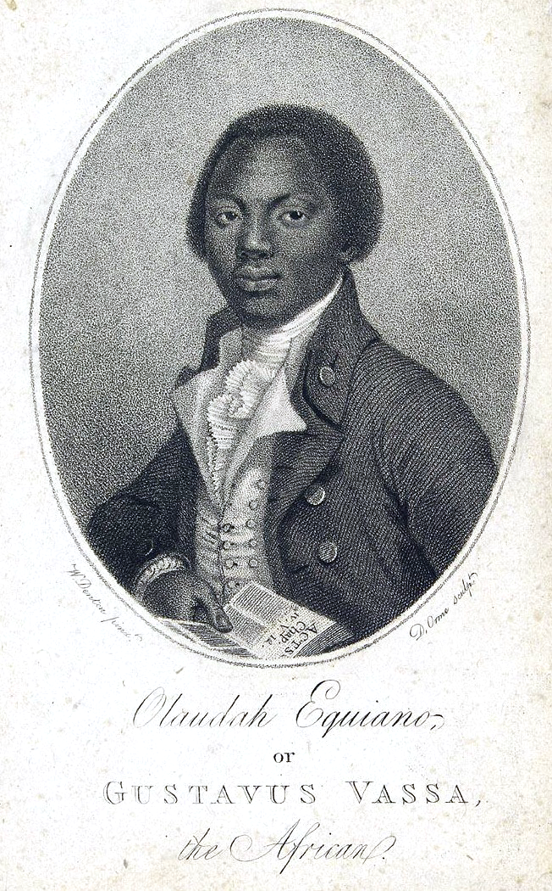
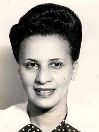
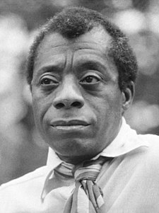
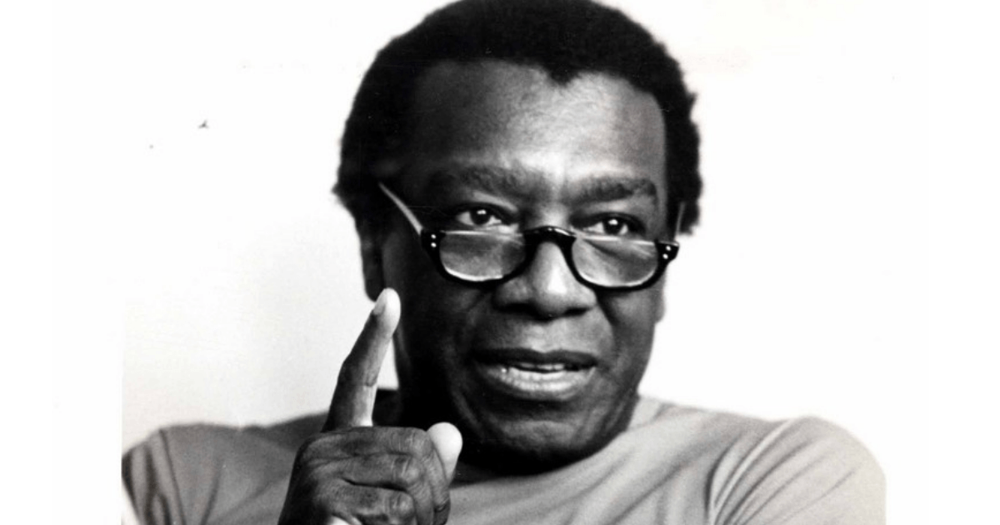

Zumbi nasceu na Serra da Barriga, Capitania de Pernambuco, atual União dos Palmares, Alagoas, livre, no ano de 1655, mas foi capturado e entregue ao padre missionário português Antônio Melo quando tinha aproximadamente seis anos. Batizado 'Francisco', Zumbi recebeu os sacramentos, aprendeu português e latim, e ajudava diariamente na celebração da missa. Por volta de 1678, o governador da Capitania de Pernambuco, cansado do longo conflito com o Quilombo de Palmares, se aproximou do líder de Palmares, Ganga Zumba, com uma oferta de paz. Foi oferecida a liberdade para todos os escravos fugidos se o quilombo se submetesse à autoridade da Coroa Portuguesa; a proposta foi aceita pelo líder, mas Zumbi rejeitou a proposta do governador e desafiou a liderança de Ganga Zumba. Prometendo continuar a resistência contra a opressão portuguesa, Zumbi tornou-se o novo líder do quilombo de Palmares. Quinze anos após Zumbi ter assumido a liderança, o bandeirante paulista Domingos Jorge Velho foi chamado para organizar a invasão do quilombo. Em 6 de fevereiro de 1694 a capital de Palmares foi destruída e Zumbi ferido. Apesar de ter sobrevivido, foi traído por António Soares, e surpreendido pelo capitão Furtado de Mendonça em seu reduto (talvez a Serra Dois Irmãos). Apunhalado, resiste, mas é morto com vinte guerreiros quase dois anos após a batalha, em 20 de novembro de 1695. Teve a cabeça cortada, salgada e levada ao governador Melo e Castro. Em Recife, foi exposta a cabeça em praça pública no Pátio do Carmo, visando desmentir a crença da população sobre a lenda da imortalidade de Zumbi. clique aqui
Luís Gonzaga Pinto da Gama[nota 1] (Salvador, 21 de junho de 1830 – São Paulo, 24 de agosto de 1882) foi um advogado, abolicionista, orador, jornalista e escritor brasileiro e o Patrono da Abolição da Escravidão do Brasil. Nascido de mãe negra livre e pai branco, foi contudo feito escravo aos 10 anos, e permaneceu analfabeto até os 17 anos de idade. Conquistou judicialmente a própria liberdade e passou a atuar na advocacia em prol dos cativos, sendo já aos 29 anos autor consagrado e considerado "o maior abolicionista do Brasil". clique aqui
Lélia Gonzalez (Belo Horizonte, 1 de fevereiro de 1935 — Rio de Janeiro, 10 de julho de 1994) foi uma intelectual, autora, política, professora, filósofa e antropóloga brasileira.[1] Foi pioneira nos estudos sobre Cultura Negra no Brasil e co-fundadora do Instituto de Pesquisas das Culturas Negras do Rio de Janeiro (IPCN-RJ), do Movimento Negro Unificado (MNU) e do Olodum.[2] Seu trabalho envolve a luta contra o racismo estrutural, a desigualdade de gênero vinculada à raça (enfoque do feminismo negro) e o conceito de democracia racial, que supostamente caracterizaria o Brasil. A autora também é conhecida por ter desenvolvido os conceitos de "amefricanidade" e "pretuguês". clique aqui

Martin Luther King Jr. (nascido Michael King Jr.; Atlanta, 15 de janeiro de 1929 — Memphis, 4 de abril de 1968) foi um pastor batista e ativista político estadunidense que se tornou a figura mais proeminente e líder do movimento dos direitos civis nos Estados Unidos de 1955 até seu assassinato em 1968. King é amplamente conhecido pela luta dos direitos políticos através da não-violência e desobediência civil, inspirado por suas crenças cristãs e o ativismo não-violento de Mahatma Gandhi. clique aqui
Malcolm X (nome de nascimento: Malcolm Little; Omaha, 19 de maio de 1925 — Nova Iorque, 21 de fevereiro de 1965), mais tarde nomeado como Malik el-Shabazz, foi um afro-americano, ativista dos direitos humanos, ministro muçulmano e defensor do Nacionalismo Negro nos Estados Unidos. Fundou a Organização para a Unidade Afro-Americana, de inspiração separatista. Defensor dos direitos dos afro-americanos, conseguiu mobilizar brancos e negros na conscientização sobre os crimes cometidos contra a população afro-americana. Em 1998, Paul Gray, da revista Time, colocou a Autobiografia de Malcolm X, escrita em colaboração com Alex Haley, entre os dez livros de não ficção mais importantes do século XX. clique aqui

Carolina Maria de Jesus (Sacramento, 14 de março de 1914 — São Paulo, 13 de fevereiro de 1977) foi uma escritora, compositora e poetisa brasileira, mais conhecida por seu livro Quarto de Despejo: Diário de uma Favelada, publicado em 1960. Carolina de Jesus foi uma das primeiras escritoras negras do Brasil e é considerada uma das mais importantes escritoras do país. A autora viveu boa parte de sua vida na favela do Canindé, na Zona Norte de São Paulo, sustentando a si mesma e seus três filhos como catadora de papéis. Em 1958, tem seu diário publicado sob o nome Quarto de Despejo: Diário de uma Favelada, com auxílio do jornalista Audálio Dantas. O livro fez um enorme sucesso e chegou a ser traduzido para catorze línguas. Carolina de Jesus era também compositora, cantora e poetisa. Sua obra e vida permanecem objetos de diversos estudos, tanto no Brasil quanto no exterior. clique aqui

Nelson Rolihlahla Mandela (Mvezo, 18 de julho de 1918 – Joanesburgo, 5 de dezembro de 2013) foi um advogado, líder rebelde e presidente da África do Sul de 1994 a 1999, considerado como o mais importante líder da África Negra, vencedor do Prêmio Nobel da Paz de 1993, e pai da moderna nação sul-africana, onde é normalmente referido como Madiba (nome do seu clã) ou "Tata" ("Pai"). clique aqui

Rosa Louise McCauley, mais conhecida por Rosa Parks (Tuskegee, 4 de fevereiro de 1913 – Detroit, 24 de outubro de 2005), foi uma ativista negra norte-americana, símbolo do movimento dos direitos civis dos negros nos Estados Unidos. Ficou famosa, em 1º de dezembro de 1955, por ter-se recusado frontalmente a ceder o seu lugar no ônibus a um branco, tornando-se o estopim do movimento que foi denominado boicote aos ônibus de Montgomery e posteriormente viria a marcar o início da luta antissegregacionista. clique aqui
Marielle Francisco da Silva, conhecida como Marielle Franco (Rio de Janeiro, 27 de julho de 1979 – Rio de Janeiro, 14 de março de 2018), foi uma socióloga e política brasileira. Filiada ao Partido Socialismo e Liberdade (PSOL), elegeu-se vereadora do Rio de Janeiro para a Legislatura 2017-2020, durante a eleição municipal de 2016, com a quinta maior votação. Marielle defendia o feminismo, os direitos humanos, e criticava a intervenção federal no Rio de Janeiro e a Polícia Militar, tendo denunciado vários casos de abuso de autoridade por parte de policiais contra moradores de comunidades carentes. Em 14 de março de 2018, foi assassinada a tiros junto de seu motorista, Anderson Pedro Mathias Gomes, no Estácio, Região Central do Rio de Janeiro. clique aqui
. François-Dominique Toussaint L'Ouverture (batizado em 20 de maio de 1743 — 7 de abril de 1803, Forte de Joux, La Cluse-et-Mijoux, Doubs) foi o maior líder da Revolução Haitiana e, em seguida, governador de Saint Domingue, o nome do Haiti na época.[1] L'Ouverture é o maior revolucionário negro das Américas, o qual é reconhecido por pesquisadores C. L. R. James como o maior comandante, depois de Napoleão Bonaparte no período de 1793 a 1814. Ele carregava consigo conhecimentos, estratégias, honrado com uma personalidade de guerrilheiro e capaz de em palavras simples aumentar cada vez mais um exercito, sendo assim, organizou na ilha de Saint Domingue com cerca de meio milhão de escravizados, a chamada Revolução do Haiti, aonde mesmo depois de sua morte o seu legado continuou, dando vigor para a construção de um novo território, dotado de liberdade e igualdade. O seu legado tem imperado até os dias atuais. Encontramos espalhados pelo mundo estatuas em sua homenagem, um hospital já levou o seu nome e filmes sobre ele. clique aqui
Harriet Tubman (nascida Araminta Ross, c. março de 1822[1] — 10 de março de 1913) foi uma abolicionista e ativista americana. Nascida escravizada, Tubman escapou e, subsequentemente, fez 19 missões para resgatar cerca de 300 pessoas escravizadas, incluindo familiares e amigos,[2] usando a rede de ativistas antiescravatura e abrigos conhecida como Underground Railroad. Durante a Guerra Civil Americana, ela serviu como batedora armada e espiã para o exército da União. Em seus últimos anos, Tubman tornou-se uma ativista pela causa do sufrágio feminino. clique aqui
Gustavus Vassa, batizado como Olaudah Equiano (Biafra, 16 de outubro de 1745 - Cambridgeshire, em 31 de março de 1797) foi um marinheiro calvinista, abolicionista e escritor nigeriano. Viveu principalmente nas colônias britânicas da América e do Reino Unido. Desempenhou importante papel no movimento abolicionista inglês em 1807.
clique aqui Virgínia Leone Bicudo (São Paulo, 21 de novembro de 1910 – 2003) foi uma socióloga e psicanalista brasileira, a primeira não médica a ser reconhecida como psicanalista, tornando-se essencial para construção e institucionalização da psicanálise no Brasil. No campo da Sociologia, foi pioneira ao tratar do estudo das relações raciais como tema de sua dissertação de mestrado em 1945. clique aqui
James Arthur Baldwin (Nova Iorque, 2 de agosto de 1924 — Saint-Paul-de-Vence, 1 de dezembro de 1987) foi um romancista, ensaísta, dramaturgo, poeta e crítico social estadunidense. Como escritor, foi aclamado em vários meios, incluindo ensaios, romances, peças de teatro e poemas. Seu primeiro romance, Go Tell It on the Mountain, foi publicado em 1953. Décadas depois, a revista Time incluiu o romance em sua lista dos 100 melhores romances de língua inglesa lançados de 1923 a 2005. Sua primeira coleção de ensaios, Notes of a Native Son, foi publicada em 1955. clique aqui
Milton Almeida dos Santos ComMC (Brotas de Macaúbas, 3 de maio de 1926 – São Paulo, 24 de junho de 2001) foi um geógrafo, escritor, cientista, jornalista, advogado e professor universitário brasileiro. Considerado um dos mais renomados intelectuais do Brasil no século XX, foi um dos grandes nomes da renovação da geografia no Brasil ocorrida na década de 1970. Embora graduado em Direito, destacou-se por seus trabalhos em diversas áreas da geografia, em especial nos estudos de urbanização do Terceiro Mundo e por seus trabalhos sobre a globalização nos anos 1990. Sua obra caracterizou-se por apresentar um posicionamento crítico ao sistema capitalista e seus pressupostos teóricos dominantes na geografia de seu tempo. clique aqui

Muhammad Ali-Haj, nascido Cassius Marcellus Clay Jr. (Louisville, 17 de janeiro de 1942 — Scottsdale, 3 de junho de 2016), foi um desportista pugilista estadunidense. É considerado um dos melhores da história do esporte, eleito "O Desportista do Século" pela revista estadunidense Sports Illustrated em 1999. clique aqui